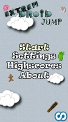
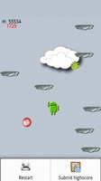

Mobile games themed around the green fella!
Extreme Droid Jump is an endless jumper game developed by ElectricSheep/Patrick Bouliou. Bugdroid is jumping through the sky, avoiding obstacles like Apples, Windows, Bricks, and a Blue Screen of Death ball. Like Doodle Jump, this game has power-ups, such as the Android desserts, Flash, and Cyanogen. And unlike Doodle Jump, this game has multiple game modes!
 
More games to be added soon, once I play them!